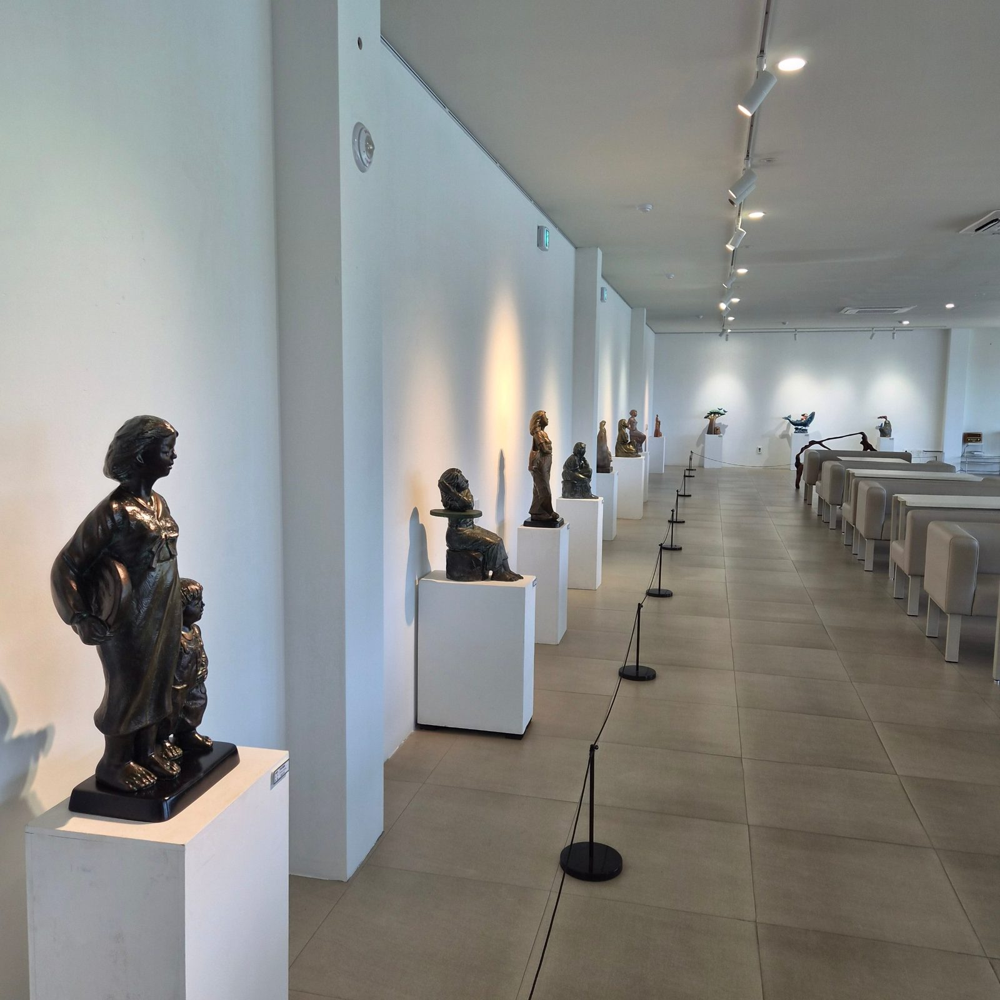
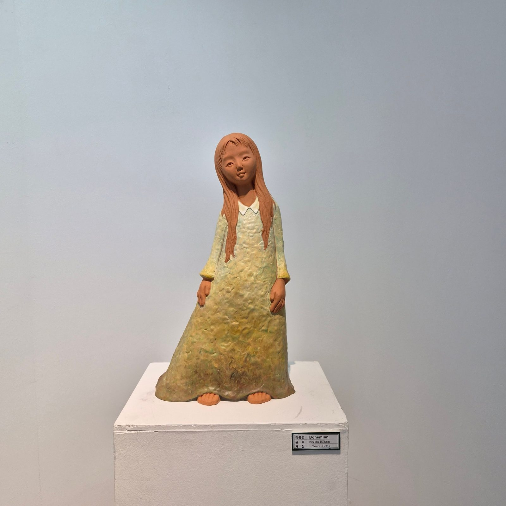
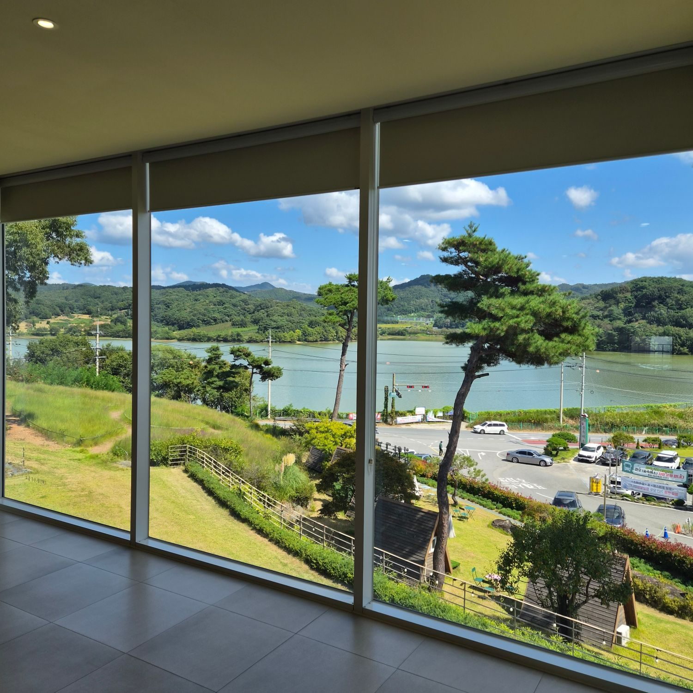
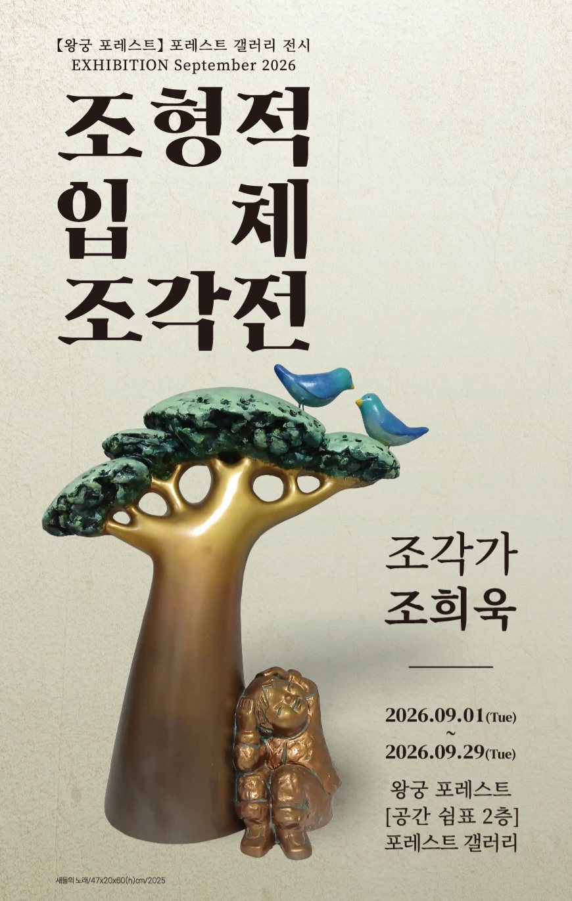
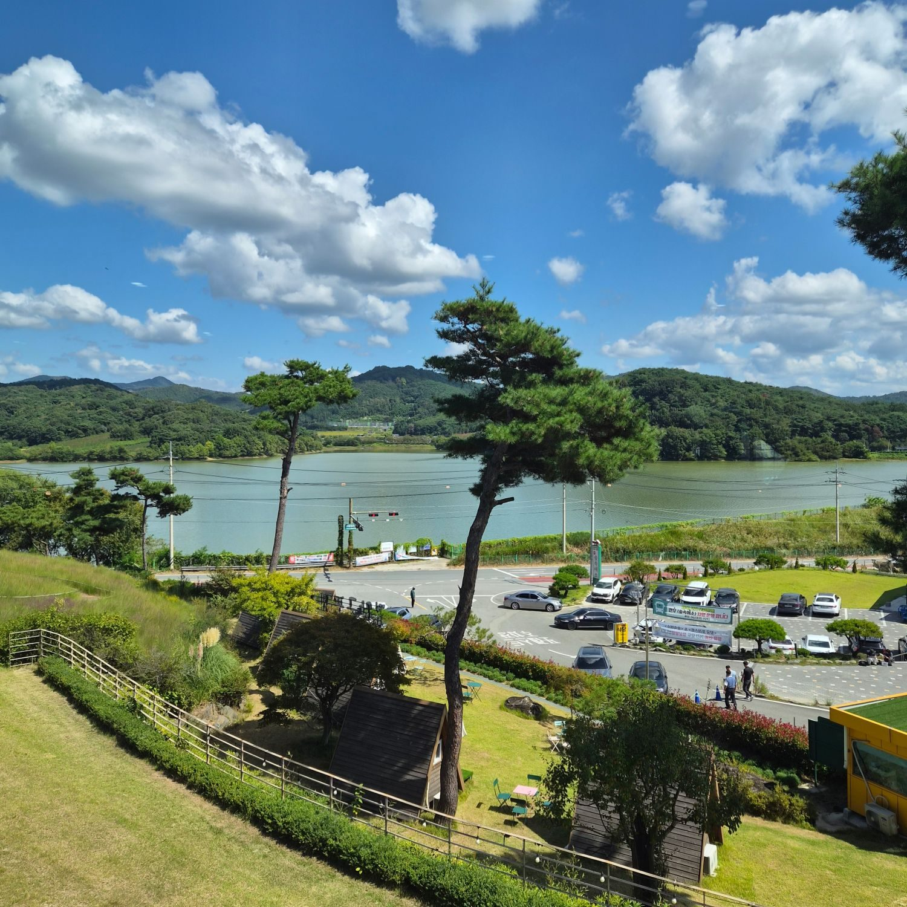

테라코타와 레진, 그리고 유화. 조희욱은 30여 년 동안 황토를 빚어 동글동글한 얼굴과 장난기 어린 표정, 어린 시절의 향수를 조각해 왔습니다.



원광대학교와 같은 대학원을 졸업하고 충남 서천의 서림여중, 서면중학교에서 미술을 가르쳤습니다. 2001년 전주 얼화랑에서 첫 개인전을 연 뒤 전국에서 개인전을 이어 왔습니다.
작업 들여다보기회화와 조각, 구상과 반구상, 전통과 현대의 경계를 오가며 사람의 몸과 색을 빚습니다.
950℃, 48시간
-
I
빚고, 비우기
점토를 붙여 형태를 만든 뒤 속을 일정한 두께로 파냅니다. 색은 흙을 빚는 단계에서 넣어, 구운 뒤에도 바래지 않습니다.
-
II
그늘에서 말리기
서늘한 그늘에서 4주 넘게 천천히 말립니다. 서두르면 가마 안에서 갈라집니다.
-
III
높은 불로 굽기
950℃를 48시간 유지하며 굽습니다. 유약 없이 흙의 질감과 온기가 그대로 남습니다.
최근에는 복잡한 자세와 다채로운 색이 가능한 레진(FRP) 작업을 함께 합니다. 「여정」은 레진 위에 유화물감을 입힌 작품입니다.
2026. 09. 01 — 09. 29
조형적 입체 조각전


작품 구입과 전시 문의는
연락처 준비 중입니다.